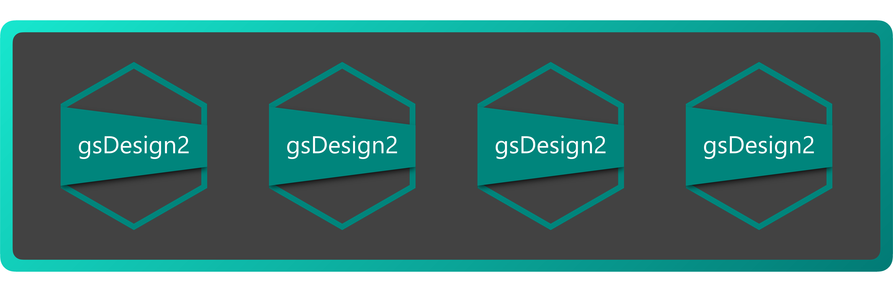

We are excited to announce the release of gsDesign2 1.1.1. This is a maintenance update that brings both new features and improvements. Built upon the gsDesign experience, gsDesign2 is an R package designed for group sequential clinical trial design under non-proportional hazards.
You can install gsDesign2 from CRAN with:
install.packages("gsDesign2")Highlights of this release include the new method for generating RTF table outputs, more rigorous input checking, and performance optimizations. We also continued to improve our documentation and package infrastructure. For the detailed changes, see the complete changelog.
RTF output support:
Besides the as_gt() method,
users can now use the as_rtf() method
to generate (well-formatted) RTF tables for fixed_design and gs_design objects.
This feature was requested by many users and is now implemented by
our colleague @fukuhiro2023.
The RTF output feature could facilitate the direct integration of trial design
outputs into reports widely used in clinical study documentation.
Performance optimizations:
We have optimized the speed of
gs_power_ahr(),
a key function used to compute group sequential design power using average
hazard ratio under non-proportional hazards. This performance improvement was
achieved through refactoring the tabular data transformations using the
data.table package, verifying our experience gained
optimizing the simtrial package.
Similar improvements have also been applied to gs_info_ahr() and pw_info().
Better input checking:
We have made some changes to
gs_power_wlr()
and to_integer()
to ensure rigorous checking and conversion of integer sample sizes, addressing
previously reported issues.
The enrollment and failure rate input constructors/validators
in define_enroll_rate() and define_fail_rate() are
refactored to check only the input data frame content instead of the object class.
This change eliminates superfluous warning messages and catches actual
exceptions as errors properly.
Better exception handling:
All gs_design_*() functions now provide explicit error handling of scenarios
where all hazard ratios are set to 1 throughout the study.
Expanded vignettes and examples:
A new vignette is added to explain the mathematical details of
statistical information under null and alternative hypotheses.
The descriptions and code examples are improved and expanded for functions like
define_enroll_rate() and define_fail_rate().
Infrastructure and testing: We continued to improve the maintainability of the package by tidying up the namespace, qualifying namespaces in tests to follow best practices, and limiting the token usage in GitHub Actions workflows.
Led by the package maintainer Yujie Zhao, our arXiv preprint Group Sequential Design Under Non-proportional Hazards explains the core theory and innovation behind gsDesign2. This paper addresses the challenge of designing clinical trials with time-to-event endpoints, particularly under non-proportional hazards scenarios. In the preprint, we introduced analytic forms for design characteristics, including sample size and boundary derivation. This enables more flexibility and efficiency of trial design, mirroring a wider range of real-world treatment possibilities.
I’m honored and a bit humbled to share that the ASA Philadelphia Chapter has granted me their 2023–2024 Practice Excellence Award.
This recognition for my long career journey is only possible thanks to the dedicated statisticians who have mentored me, the brilliant colleagues who inspire me, and the teams who turn these statistical advances into tangible breakthroughs for patients. I extend my gratitude to my nominators for their support and acknowledgment of my contributions. This award underscores the importance of innovative statistical methodology and applications in real-world practice, and I am proud to have played a part in advancing our field.
As always, please reach out with questions or feature requests. The gsDesign2 team is devoted to creating simple, reliable, and effective tools that push what’s possible in clinical trial design. Your feedback helps us grow.